10 部片单 · 恐怖 / 科幻 / 惊悚 / 悬疑 / 剧情
| # | 片名 | 类型 | 评分 / 状态 |
|---|---|---|---|
| 01 | 战栗空间 | 惊悚 / 犯罪（美国 · 一间只对内开门的房间） | 7.2 / 76% / 65 |
| 02 | 极限空间 | 悬疑 / 惊悚（西班牙 · 一间会往里收的房间） | 6.7 / 70% / 6.6 |
| 03 | 电梯里的恶魔 | 恐怖 / 悬疑（美国 · 一部停在半空的电梯） | 6.5 / 49% / 44 |
| 04 | 127小时 | 剧情 / 冒险（美国 / 英国 · 一块石头和一条手臂） | 8.1 / 93% / 82 |
| 05 | 一切尽失 | 剧情 / 冒险（美国 · 印度洋上的一艘帆船） | 7.7 / 94% / 87 |
| 06 | 意外空间 | 科幻 / 惊悚（墨西哥 · 一段走不完的楼梯） | 7.6 / 6.4 / 未收录 |
| 07 | 隧道 | 剧情 / 惊悚（韩国 · 一段塌下来的公路隧道） | 7.9 / 100%* / 6.8 |
| 08 | 鲨滩 | 惊悚 / 剧情（美国 · 离沙滩两百码的一块礁石） | 7.1 / 78% / 59 |
| 09 | 密室逃生 | 惊悚 / 悬疑（美国 / 南非 · 六间为六个人准备的房间） | 7.1 / 51% / 48 |
| 10 | 氧气危机 | 科幻 / 惊悚（法国 / 美国 · 一台只剩百分之三十的低温舱） | 6.5 / 90% / 67 |
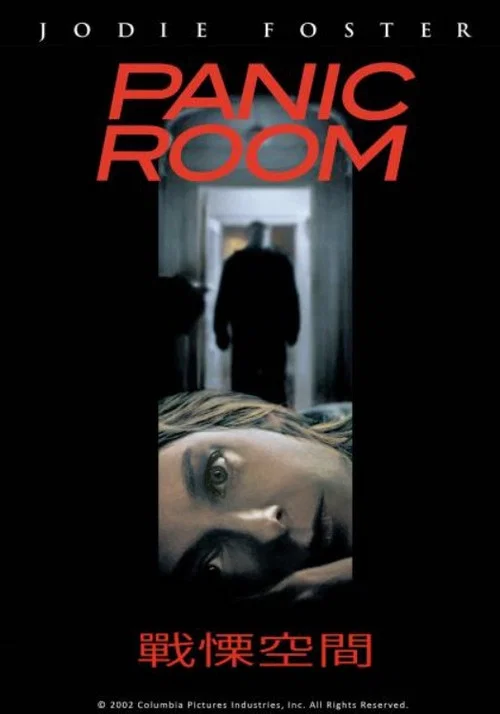
战栗空间 Panic Room
「它本来是这栋房子里最安全的房间。」
剧情梗概
刚离婚的梅格带着女儿莎拉搬进纽约一栋四层褐石公寓。这栋房子里有一间安全屋：钢门、独立通风、一整面监控屏，以及一条只能打出去的电话线。入住第一晚，三个男人进来了。母女俩退进安全屋，门从里面锁上——而他们要的东西，就锁在那间屋子里。
亮点
- 大卫·芬奇执导，大卫·柯普编剧；成本约 4800 万美元，全球票房约 1.97 亿美元。
- 全片几乎只在一栋房子里完成。剧组在洛杉矶搭了完整的四层剖面布景，摄影机能从天花板一路穿到地板——那几段「穿墙」的长镜头是实拍加数字合成的连续运动，不是切出来的。
- 朱迪·福斯特是在原定主演因伤退出之后接手的，出演时 39 岁；全片她的表演几乎全靠声音、呼吸和手完成。
- 克里斯汀·斯图尔特出演时 11 岁，演一个随时需要注射胰岛素的糖尿病女孩——这个设定不是装饰，后半段它变成了唯一的破局工具。
- 福里斯特·惠特克演的伯纳姆是三人里唯一不想伤人的人；这间安全屋的设计标准正是他自己也进不去。
- 豆瓣 7.2 / 烂番茄 76% / Metacritic 65 / IMDb 6.8：专业评价不差，但华语观众对「芬奇加密室」的期待更高。
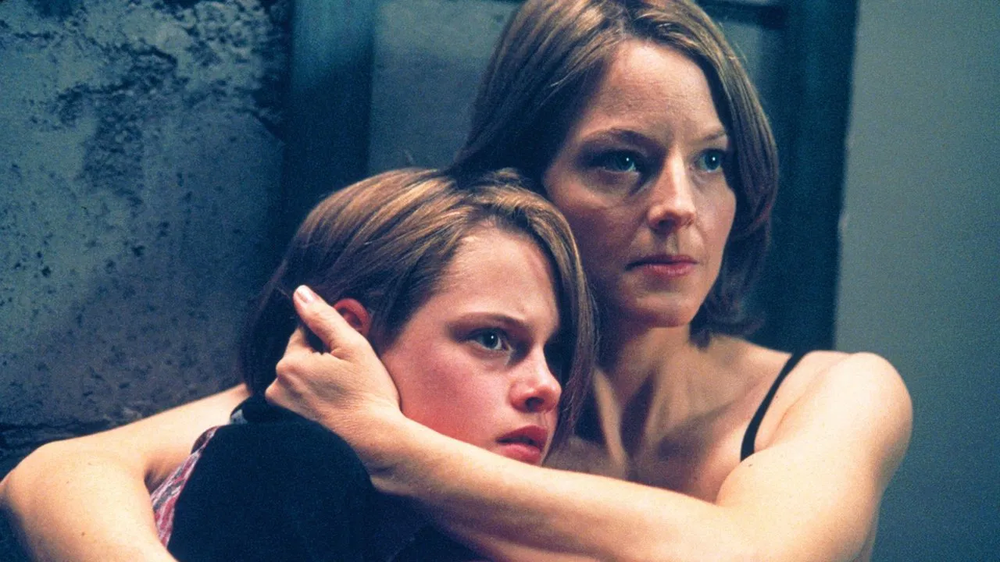
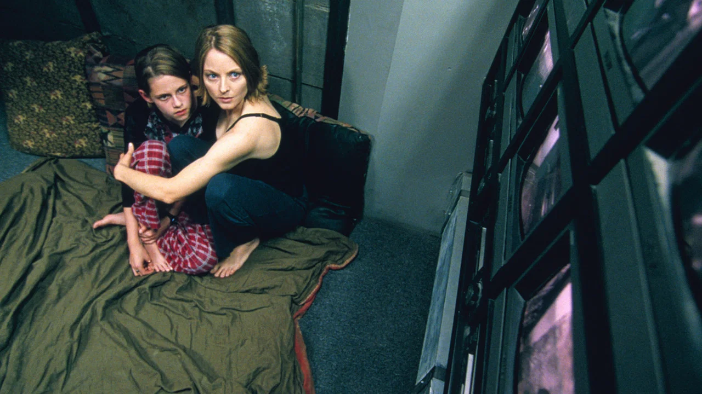
导演与主创 · 他们的历史作品

 搏击俱乐部
搏击俱乐部 七宗罪
七宗罪 消失的爱人
消失的爱人 本杰明·巴顿奇事
本杰明·巴顿奇事
 沉默的羔羊
沉默的羔羊 出租车司机
出租车司机 超时空接触
超时空接触 极乐空间
极乐空间
 暮光之城
暮光之城 暮光之城2：新月
暮光之城2：新月 暮光之城4：破晓（下）
暮光之城4：破晓（下） 暮光之城4：破晓（上）
暮光之城4：破晓（上）短评（轻微剧透）
轻微剧透：真正的转折在「他们要的不是钱」。三人闯进来是为了前屋主藏在那间屋子里的东西，而知道这件事的人，恰恰是把房子卖给梅格的那一位。轻微剧透：芬奇把这场博弈做成了一整套空间算术——谁在哪一层、谁离那扇门最近、监控屏上还剩几个格子能看。第二处转折是梅格终于离开安全屋的那一刻：她不是被逼出来的，是女儿的血糖撑不住了。结尾母女俩坐在门外的台阶上、房子换了主人，是全片唯一一次把镜头拉远。
为什么值得一看
想看「一个空间能被拍出多少种走位」的人；能接受人物动机简单、中段略长、112 分钟几乎全在室内的观众。R 级，含暴力与血腥画面，建议小学以上陪同观看。内地未映，流媒体可看。看完想继续：《活埋》《狙击电话亭》《科洛弗道10号》。
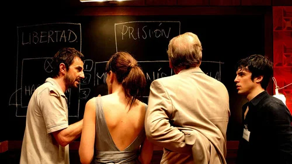
极限空间 La habitación de Fermat
「墙又往里收了一格。」
剧情梗概
四个人收到同一封邀请函，赴约时要用假名：伽罗华、希尔伯特、帕斯卡、奥莉薇娅——借的都是数学家的名字。聚齐之后他们发现，自己被锁在一间仓库一样的屋子里，桌上每隔几分钟出现一道新的谜题；答错或者超时，四面墙就往里收一段。他们必须先弄清楚一件事：这四个人之间到底有什么共同点。
亮点
- 路易斯·佩德拉希塔与罗德里戈·索佩尼亚联合编导，两人此前在西班牙做谜题与魔术类电视节目——这不是跨界，是把老本行搬进了电影。
- 成本极低，主要场景只有一间会移动的房间；那面墙是靠液压装置真的推过来的，演员是真的被挤到。
- 片中的谜题都是真实可解的，四个代号分别借自数学史上的名字；这不是随手起的绰号，后面有一道题要靠它。
- 费德里科·卢皮演的「费马」是阿根廷老牌演员，他是全片唯一一个始终站在房间之外的人。
- 本片 2007 年在西班牙锡切斯电影节首映，之后由网飞在全球范围内上线。
- 豆瓣 6.7 / 烂番茄 70% / IMDb 6.6：**本期评分最低的一部**，入选是因为它把「密室」和「解题」这两件事绑得最紧。
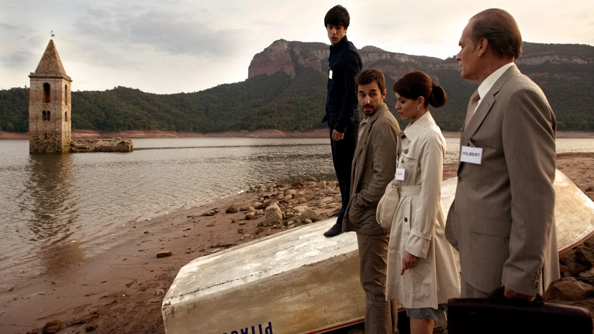
导演与主创 · 他们的历史作品
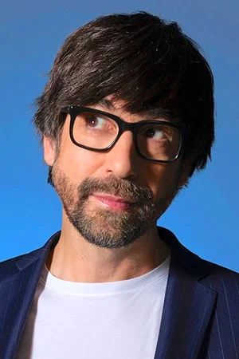
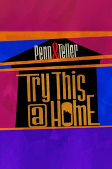
Penn & Teller: Try This at Home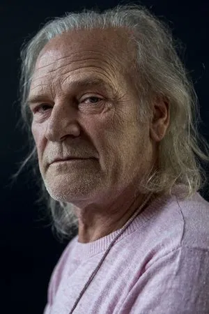
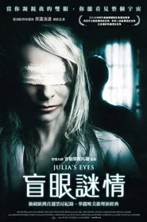
茱莉娅的眼睛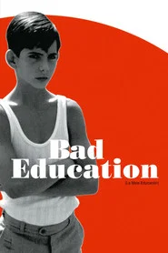
不良教育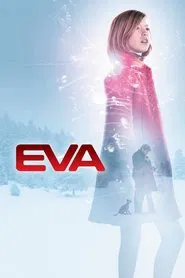
伊娃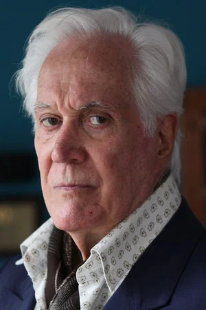
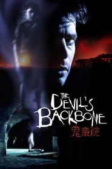
鬼童院 潘神的迷宫
潘神的迷宫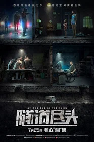
隧道尽头短评（轻微剧透）
轻微剧透：真正的转折不在最后一道题，而在四人终于承认自己撒了谎——他们不是被随机挑中的，四个人各自欠着同一场事故。轻微剧透：这部片真正的机关是时间：每道题的倒计时不是装饰，墙的移动速度是按答题进度算的，所以你看到的每一次收缩都是他们自己造成的。结尾那个把门打开的装置，是四人手里各自那件东西拼起来的——这个设计笨，但很诚实。
为什么值得一看
想看「数学题怎么变成惊悚片的节拍」的人；能接受人物偏扁平、逻辑有几处硬伤、89 分钟里大部分时间在争吵的观众。无血腥画面，含少量暴力与惊吓，适合初中以上观看。内地 2010-03-04 公映过，流媒体可看。看完想继续：《心慌方》《终极面试》《彗星来的那一夜》。
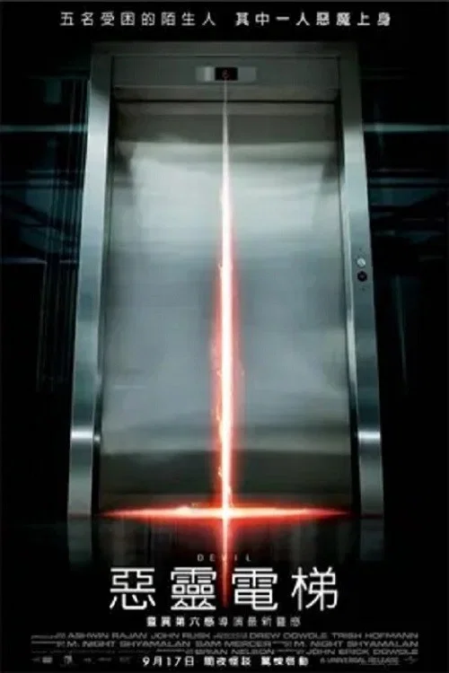
电梯里的恶魔 Devil
「灯每灭一次，就少一个人。」
剧情梗概
费城一栋办公楼里，五个人先后走进同一部电梯。电梯卡在半空，维修工修不好，保安也叫不来。灯第一次熄灭之后，其中一个人背后多了一道伤口。楼下的警探博登通过监控和对讲看着这一切，慢慢意识到：这五个人不是随机凑到一起的。
亮点
- 故事与制片来自沙马兰，导演是约翰·埃里克·道达尔；这是他规划的「夜间编年史」系列的第一部，后面两部没有拍成。
- 成本约 1000 万美元，北美票房约 3360 万美元，全球约 6340 万美元——以恐怖片的标准看是很划算的一笔。
- 全片 80 分钟，几乎全部发生在一部电梯轿厢和一间保安室里；那部电梯是按真实比例搭的，能真的上下移动一小段。
- 克里斯·梅西纳演的博登警探是唯一一个在电梯外的人——他的那条线与轿厢里的那条线同时推进，也是全片唯一的外部视角。
- 罗根·马歇尔-格林演的修理工是全片最后一个还站着的人，他凭这个角色拿到当年恐怖片奖项的最佳男配角提名。
- 豆瓣 6.5 / 烂番茄 49% / Metacritic 44 / IMDb 6.3：**本期专业评价最低的一部**，但 80 分钟的密度是本期最高的。
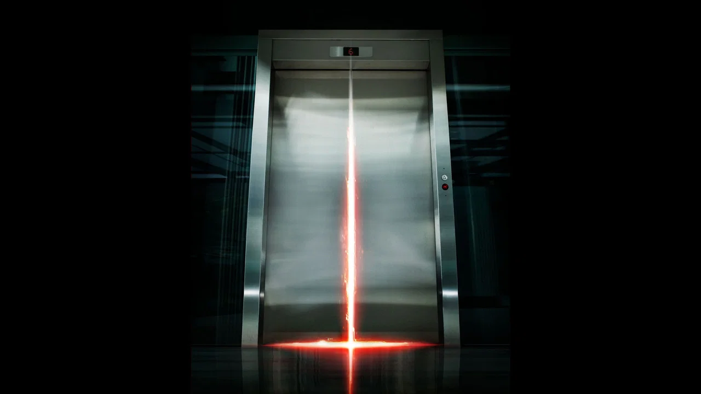
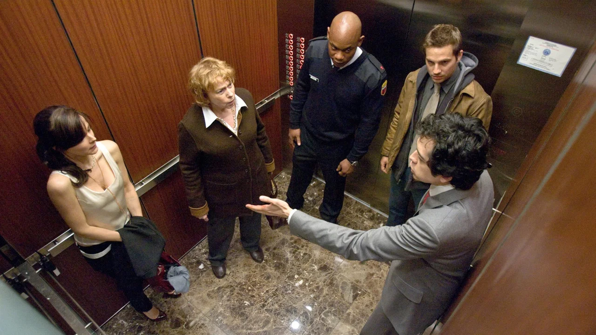
导演与主创 · 他们的历史作品
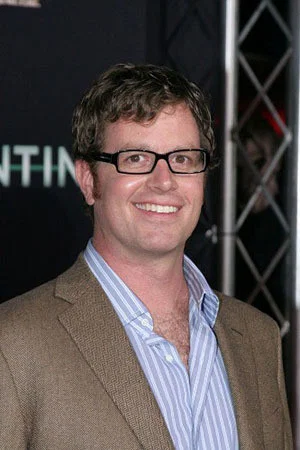
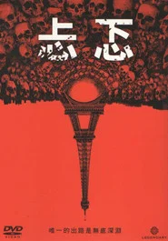
巴黎地下墓穴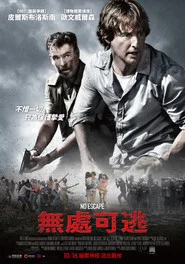
无处可逃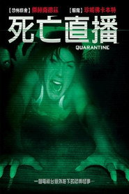
隔离区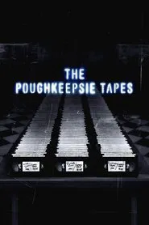
波基普西录像带
 分裂
分裂 第六感
第六感 不死劫
不死劫 玻璃先生
玻璃先生
 升级
升级 致命邀请
致命邀请 普罗米修斯
普罗米修斯 蜘蛛侠：英雄归来
蜘蛛侠：英雄归来短评（轻微剧透）
轻微剧透：真正的转折在灯第三次熄灭之前——出事的顺序不是上电梯的顺序，而是「谁在隐瞒什么」。轻微剧透：这部片把恐怖片的机制改成了一套算术：每个人都有一个不肯说出口的错处，而那个东西正在按次序被取走。结尾那句宽恕来得很快、也很直接，是它被批评最多的地方，但它正是这部片真正想说的那句话。
为什么值得一看
想看「80 分钟不喘气」的人；能接受人物刻画单薄、寓意比较直白、结局偏说教的观众。PG-13，含惊吓与血腥画面，建议初中以上观看。内地未映，流媒体可看。看完想继续：《心慌方》《1408幻影凶间》《活埋》。
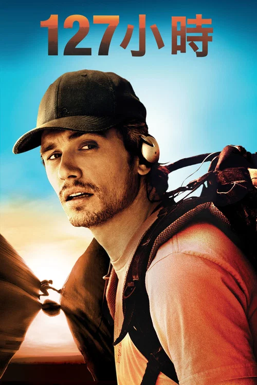
127小时 127 Hours
「这块石头从几十亿年前就在等我。」
剧情梗概
2003 年 4 月，阿伦独自进犹他州的蓝约翰峡谷，没有告诉任何人。一块几百公斤的石头落下，压住了他的右前臂。他手上只有一个急救包、一根登山绳、一把 8 厘米的小折刀和一天的口粮。第五天，他做了一个决定。
亮点
- 丹尼·博伊尔执导并与西蒙·博福伊共同编剧，改编自阿伦·罗斯顿本人的回忆录。
- 成本约 1800 万美元，全球票房约 6070 万美元；第 83 届奥斯卡六项提名，包括最佳影片与最佳男主角。
- 全片几乎只有一个演员和一个场景，靠剪辑、分屏与主观镜头撑起来——博伊尔说过这是他拍过最不依赖场面的一部。
- 真实的阿伦·罗斯顿在片尾短暂出镜；他 2003 年 5 月 1 日断臂自救，之后继续登山。
- 断臂那一段用的是实拍加局部假肢，声音是另外做出来的——当年多个放映场有观众晕倒的记录。
- 豆瓣 8.1 / 烂番茄 93% / Metacritic 82 / IMDb 7.6：**本期专业评分最高的一部**。
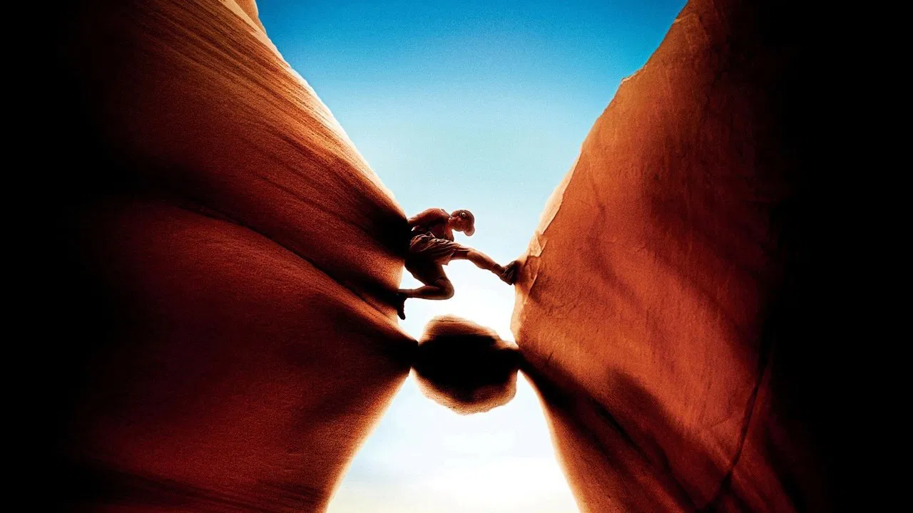
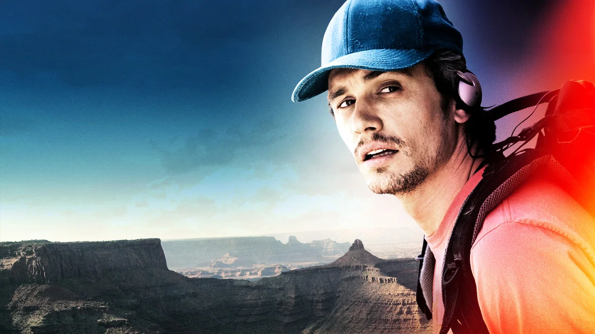
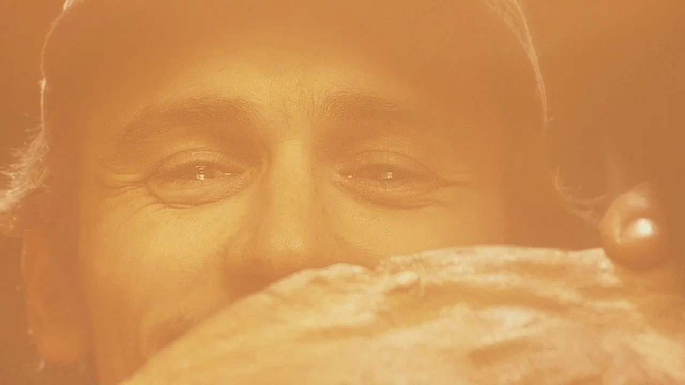
导演与主创 · 他们的历史作品

 贫民窟的百万富翁
贫民窟的百万富翁 猜火车
猜火车 惊变28天
惊变28天 海滩
海滩
 世界末日
世界末日 魔境仙踪
魔境仙踪 猩球崛起
猩球崛起 刺杀金正恩
刺杀金正恩 火星救援
火星救援 神奇四侠
神奇四侠 钢铁侠2
钢铁侠2短评（轻微剧透）
轻微剧透：真正的转折不在那把小刀，而在他终于接受「没有人会来」——前半小时一直在铺垫他的性格：不告而别、不接电话、习惯一个人。轻微剧透：博伊尔把「渴」拍得比「疼」更狠；他用那台摄像机录下遗言的一段，是全片最安静也最难受的地方。结尾他爬出峡谷、在岩壁上看见自己刻下的名字，是这部片唯一一次允许自己抒情。
为什么值得一看
想看「一个人能撑到什么程度」的人；能接受全片几乎没有对话、中段极度压抑、断臂段落画面直接的观众。R 级，含自残与血腥，心理承受力弱的慎看。内地未映，流媒体可看。看完想继续：《荒野生存》《火星救援》《一切尽失》。
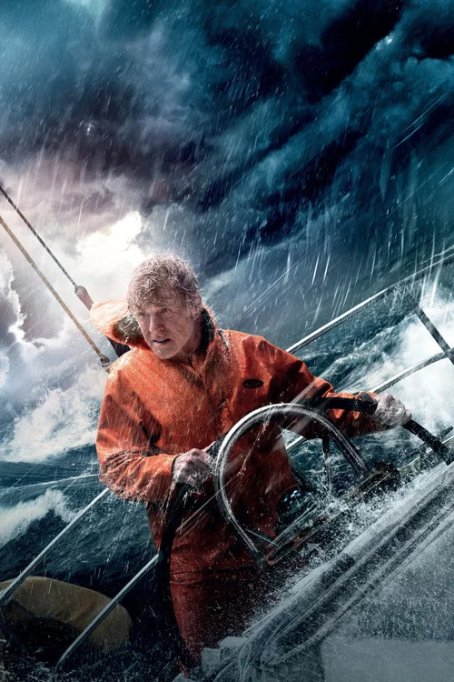
一切尽失 All Is Lost
「醒来的时候，水已经到膝盖了。」
剧情梗概
印度洋，距苏门答腊海峡一千七百海里。一个独自驾帆船的人醒来发现船在进水——撞上了一个漂在海上的集装箱。他堵住破口、修好电台、爬上救生筏；然后风暴来了，然后鲨鱼来了，然后路过的货轮没有看见他。全片他有一句台词。
亮点
- 尚多尔自编自导，这是他的第二部长片，前一部是同样「一个人被困在系统里」的《商海通牒》。
- 成本约 850 万美元；罗伯特·雷德福出演时 77 岁，凭此片拿到金球奖剧情类最佳男主角提名。
- 剧本里这个人物没有名字，字幕上写的就是「我们的男人」；全片对白只有片头那段画外音之后的一句。
- 大量海上镜头是实景拍摄：剧组在巴哈马与墨西哥外海真的把船弄沉、把筏子弄翻，雷德福自己在水里完成了大部分动作。
- 配乐由一支美国独立乐队的主唱完成，是这部片里唯一一处「还有别人在场」的声音。
- 豆瓣 7.7 / 烂番茄 94% / Metacritic 87 / IMDb 6.9：**烂番茄 94% 是本期最高**。
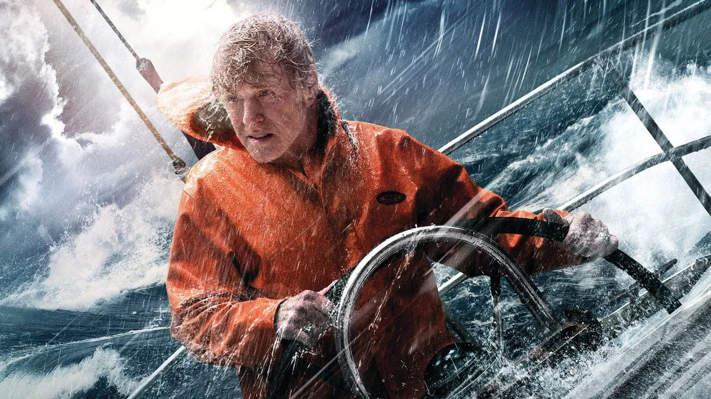
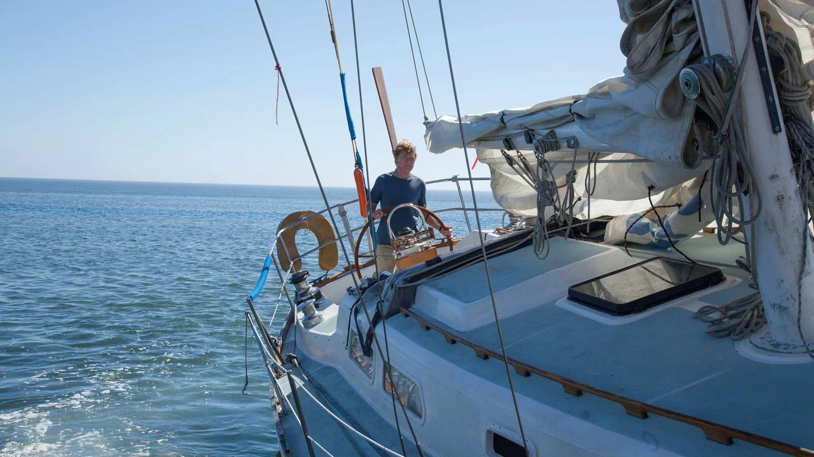
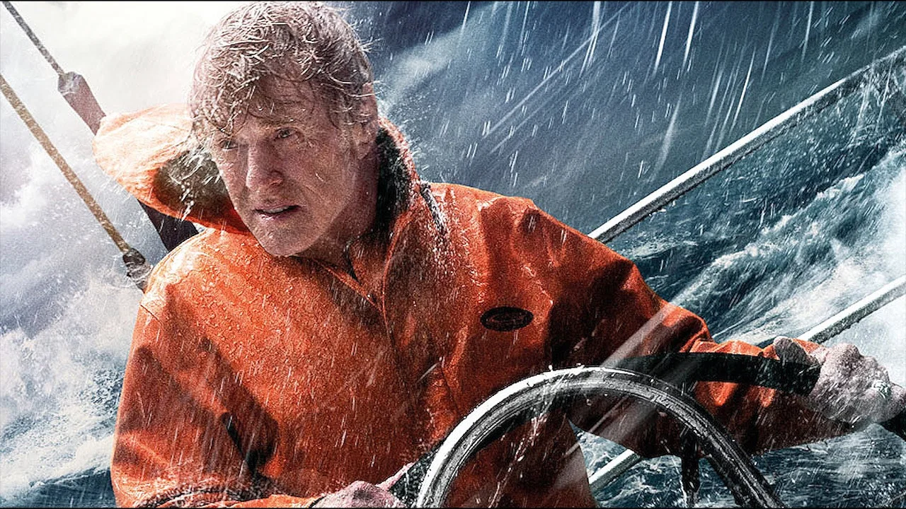
导演与主创 · 他们的历史作品
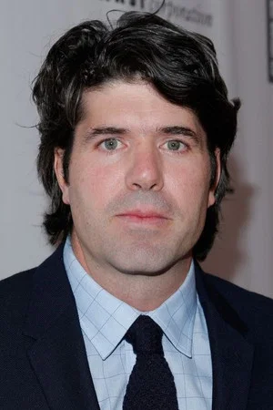
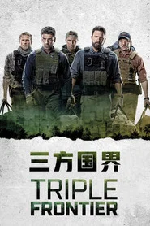
三方国界 猎人克莱文
猎人克莱文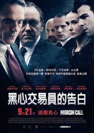
商海通牒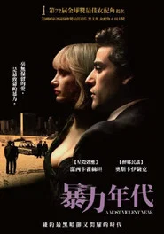
至暴之年
 美国队长2
美国队长2 间谍游戏
间谍游戏 桃色交易
桃色交易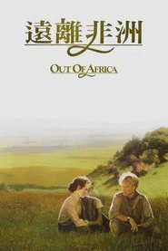
走出非洲短评（轻微剧透）
轻微剧透：真正的转折在救生筏第二次被掀翻之后——到那时你已经明白，这部片不会派来任何外部救援。尚多尔把「求生」拍成了一连串具体的技术动作：剪纸板、接水管、算淡水、记天数。轻微剧透：结尾他把手伸向水面下那一点光的方向，画面在这里切断；不说他有没有活下来，是这部片最后的一点温柔。
为什么值得一看
想看「几乎无台词也能撑满 106 分钟」的人；能接受全片只有一个角色、节奏缓慢、结局不作交代的观众。PG-13，含海难与受伤画面，适合小学以上观看。内地未映。看完想继续：《少年派的奇幻漂流》《127小时》《地心引力》。
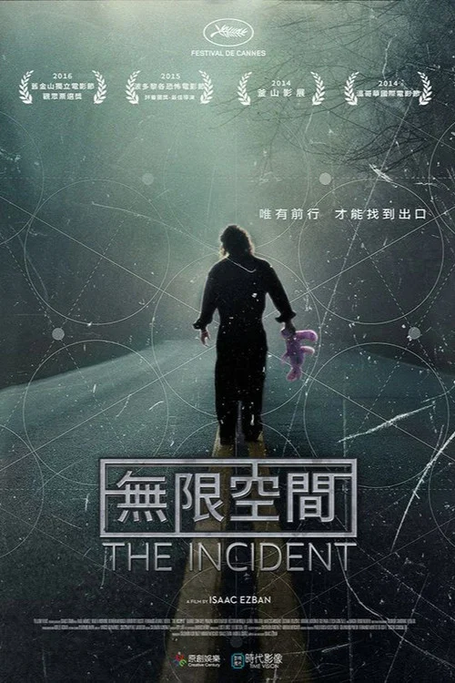
意外空间 El Incidente
「第九层之后，还是第九层。」
剧情梗概
两条线同时展开。一条：一对兄弟拿了来路不明的钱，警察追上门，三个人在楼梯间里跑，然后楼梯就再也没有尽头——九层之后还是九层。另一条：一家人开车出城，公路两边的加油站和便利店永远是同一家。他们都出不去，而外面的时间照常走。
亮点
- 伊萨克·厄兹本自编自导，这是他的长片处女作，此后他又拍了《相似者》与《镜像世界》。
- 全片用西班牙语拍摄，成本极低；楼梯间与公路两段是分开搭的景，靠剪辑对齐。
- 楼梯那一段里，弟弟在循环里过了三十五年；公路那一段里，那一家人在车里重复经过同一个加油站——两边的时间尺度不一样，却被剪成了同时发生。
- 胡伯托·布斯托演弟弟，是这条线里唯一一个坚持在墙上刻字记天数的人。
- 劳尔·门德斯演的警察是唯一一个从「外面」追进来的人；他进来之后，就再也没能出去。
- 豆瓣 7.6 / IMDb 6.4：华语观众评分明显高于欧美，很多人把它和《恐怖游轮》放在一起谈。
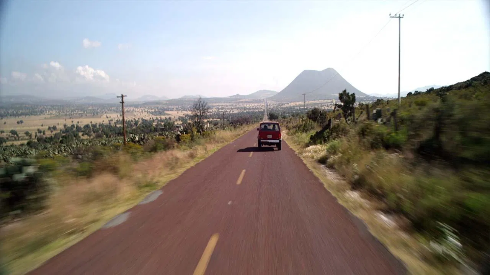
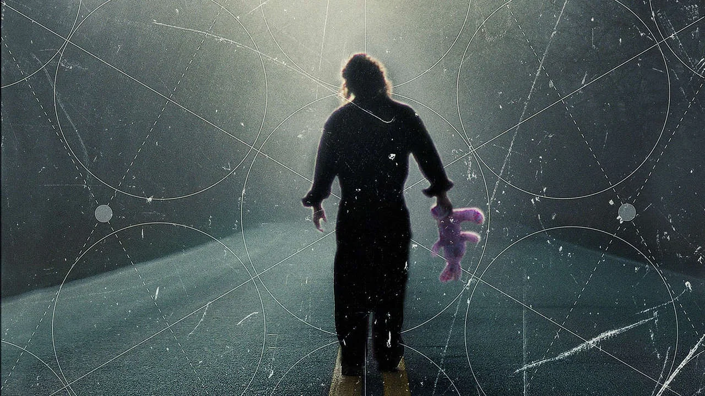
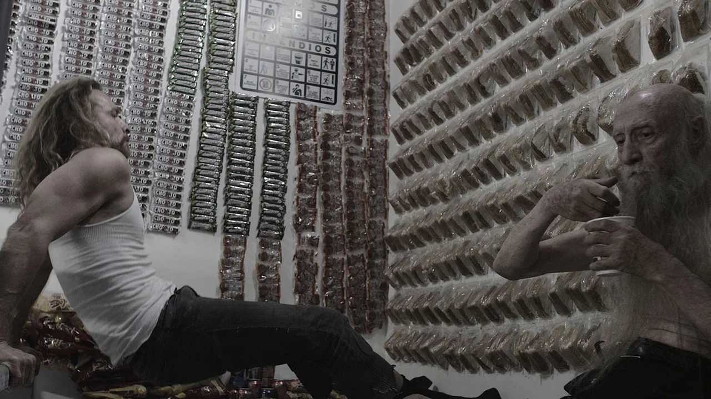
导演与主创 · 他们的历史作品
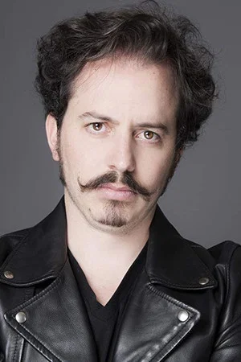
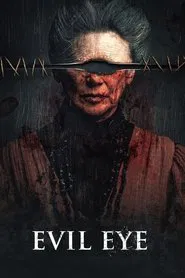
邪眼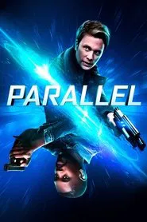
镜像世界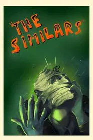
相似者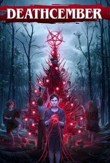
死二月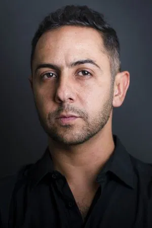
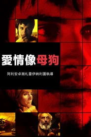
爱情是狗娘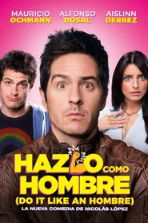
爷们儿点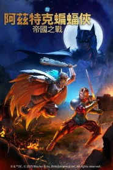
阿兹特克蝙蝠侠：帝国冲突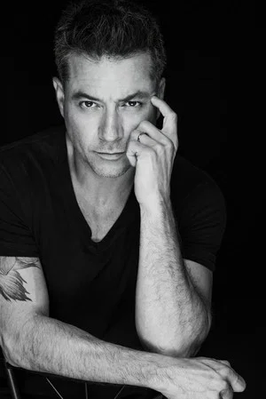
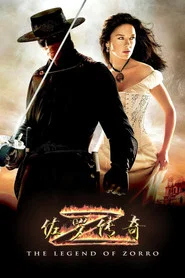
佐罗传奇短评（轻微剧透）
轻微剧透：真正的转折在两条线终于被接上的那一刻——你原以为是两个故事，其实是同一个人在不同年纪的两种处境。轻微剧透：这部片把「循环」做成了一个关于习惯的寓言：困住他们的不是楼梯和公路，是他们自己重复了几十年的那套反应。结尾那个终于走出楼梯间的人，做的第一件事不是跑，是回头看了一眼。
为什么值得一看
想看「低成本科幻能想到什么程度」的人；能接受节奏偏慢、逻辑需要自己补、100 分钟里两条线交替推进的观众。无血腥画面，含少量暴力与惊吓，建议初中以上观看。内地未映，流媒体可看。看完想继续：《恐怖游轮》《彗星来的那一夜》《前目的地》。
隧道 Tunnel
「您好，是救援队吗。我在隧道里面。」
剧情梗概
汽车销售员李正洙买了蛋糕，赶回家给女儿过生日。车进隧道的时候，隧道塌了。他被困在车里，手机只剩一点电，身边只有一瓶水、一个蛋糕和一条狗。隧道外面，救援队挖了三十五天，媒体直播了三十五天，官员来合影了三十五天。
亮点
- 金成勋自编自导；他与河正宇此前合作的《走到尽头》也是「一个人被卡住」的故事，那一部卡在一场葬礼和一场追车里。
- 成本约 1000 万美元，韩国观影人次约 712 万，是 2016 年韩国本土票房前十。
- 河正宇出演时 38 岁，全片近一半时间在一辆车里完成；隧道搭了一段实景，其余靠灯光与尘土做出来。
- 裴斗娜演妻子世贤，是全片唯一一个始终在做决定的人——她签救援同意书，也对媒体发火。
- 吴达洙演救援队队长，他与河正宇、裴斗娜的对手戏几乎全部发生在隧道之外。
- 豆瓣 7.9 / IMDb 6.8：华语观众评分明显更高；这部片的讽刺对象在任何地方都成立。
导演与主创 · 他们的历史作品

 尸战朝鲜：雅信传
尸战朝鲜：雅信传 走到尽头
走到尽头 非官方行动
非官方行动 爱情缺乏对两个男人的影响
爱情缺乏对两个男人的影响
 小姐
小姐 与神同行：罪与罚
与神同行：罪与罚 追击者
追击者 与神同行2：因与缘
与神同行2：因与缘 云图
云图 汉江怪物
汉江怪物 我要复仇
我要复仇 木星上行
木星上行短评（轻微剧透）
轻微剧透：真正的转折不在他被挖出来，而在隧道外那三十五天里发生的事：救援预算被算成「值不值」，官员来合影，记者为了独家把钻头都堵住。轻微剧透：金成勋把这部片拍成了一部黑色喜剧——里面的人在拼命活着，外面的人在拼命作秀，两条线越往后越荒诞。结尾他走出隧道、对着镜头说的那句，是这部片留给现实的一句话。
为什么值得一看
想看「灾难片怎么被拍成社会讽刺」的人；能接受中段节奏偏长、幽默与沉重交替、126 分钟的观众。含坍塌与受伤画面，无血腥，适合小学以上观看。内地未映，流媒体可看。看完想继续：《釜山行》《走到尽头》《恐怖直播》。
鲨滩 The Shallows
「就两百码。」
剧情梗概
南希来到母亲生前最喜欢的一片海滩冲浪。她在离岸两百码的地方被什么东西咬了一口，爬上一块露出海面的礁石。两百码，游过去只要几分钟——但中间隔着一头大白鲨。潮水正在涨上来，天黑之前这块礁石会被淹掉。
亮点
- 佐米·希尔拉执导，安东尼·贾斯温斯基编剧；成本约 1700 万美元，全球票房约 1.19 亿美元。
- 全片主要场景只有一个：一块礁石加一片海。剧组在澳大利亚与多米尼加外海实拍，布蕾克·莱弗利大部分动作自己完成。
- 布蕾克·莱弗利出演时 29 岁，全片有近三分之一时间几乎独自在镜头里；美国多家影评都把这次表演称为「既是运动能力也是表演能力」。
- 那只海鸥是真的，那条鲨鱼几乎全是电脑特效——两者出现在同一批镜头里，处理方式完全不同。
- 片长只有 86 分钟，是本期最短的一部；它把求生压缩成几个具体动作：止血、缝针、算潮水。
- 豆瓣 7.1 / 烂番茄 78% / Metacritic 59 / IMDb 6.3：**典型的「专业评价一般、观众看着很爽」**。
导演与主创 · 他们的历史作品
 丛林奇航
丛林奇航 孤儿怨
孤儿怨 时光尽头的恋人
时光尽头的恋人 绿灯侠
绿灯侠 一个小忙
一个小忙 爱情，到此为止
爱情，到此为止 加勒比海盗4：惊涛怪浪
加勒比海盗4：惊涛怪浪 饥饿站台2
饥饿站台2短评（轻微剧透）
轻微剧透：真正的转折在她发现那艘沉船之前——前面所有的努力都只是为了撑到涨潮，而涨潮意味着礁石没了。轻微剧透：这部片把空间算得很死：伤口的位置、潮水的高度、浮标的距离，每一个数字后面都会用到。结尾她把浮标绳系在自己腿上那一幕，是这部片唯一一次让人真的松一口气。
为什么值得一看
想看「86 分钟纯求生、不需要任何背景」的人；能接受设定简单、人物动机单薄、有几处物理上不太成立的观众。PG-13，含血腥与受伤画面，建议初中以上观看。内地 2016-09-09 公映过，流媒体可看。看完想继续：《大白鲨》《一切尽失》《127小时》。
密室逃生 Escape Room
「这一关，是为谁设计的？」
剧情梗概
六个陌生人各自收到一个木制魔方，解开之后得到一张邀请函：参加一场密室逃脱，赢家一万美元。他们在候诊室里集合，然后发现候诊室本身就是第一关——房间开始变成一个烤箱。之后是冰屋、倒过来的台球室、有毒气的病房。每一关都不一样，每一关都像是在问其中一个人一件事。
亮点
- 亚当·罗比特尔执导，此前与温子仁合作过《潜伏4：锁命亡灵》。
- 成本不足 1000 万美元，全球票房超过 1.5 亿美元；续集《密室逃生2》在 2021 年上映。
- 六间密室是分别搭建的实景，不是绿幕；颠倒台球室那一场是把整个房间真的倒过来建的。
- 泰勒·拉塞尔演的佐伊是物理系学生，也是唯一一个开始记笔记的人——全片的解谜逻辑基本挂在她身上。
- 洛根·米勒演的本，开场那场被收拢的房间压住的戏发生在三天前，是全片最后才接上的一段。
- 豆瓣 7.1 / 烂番茄 51% / Metacritic 48 / IMDb 6.4：**本期华语观众与欧美影评落差第二大的一部**。
导演与主创 · 他们的历史作品
 潜伏4：锁命亡灵
潜伏4：锁命亡灵 骨及所有
骨及所有 浪潮
浪潮 童军手册之僵尸启示录
童军手册之僵尸启示录 亚瑟和他的迷你王国2
亚瑟和他的迷你王国2短评（轻微剧透）
轻微剧透：真正的转折在佐伊把六个人的共同点拼出来——他们都是某场事故的唯一幸存者。轻微剧透：这部片真正聪明的地方，是把密室做成了一套审讯：每一关的机关都对应一个人没说出口的那件事，所以「解谜」其实是在逼他们交代。结尾她带着线索板走进那栋楼，是这部片唯一一次把悬念留给了下一部。
为什么值得一看
想看「99 分钟不冷场的机关片」的人；能接受人物刻画浅、部分机关牵强、结局明显留续集的观众。含暴力与死亡画面，建议初中以上观看。内地 2019-01-18 公映过，流媒体可看。看完想继续：《电锯惊魂》《心慌方》《极限空间》。
氧气危机 Oxygen
「剩余氧气：百分之三十二。」
剧情梗概
一个女人在低温舱里醒来，不记得自己是谁。舱盖打不开，舱内氧气只剩不到三分之一，唯一的同伴是一个叫米洛的人工智能——而它按规定不能替她开门。她一边往外找路，一边往回找记忆，最后发现这两件事指向的是同一个答案。
亮点
- 亚历山大·阿嘉执导，克里斯蒂·勒布朗编剧；2021 年 5 月在网飞上线，几乎没有院线放映。
- 阿嘉是 2000 年代法国极端恐怖那一波的代表名字（《高压电》《隔山有眼》《巨鳄风暴》），这是他第一次做纯科幻。
- 梅拉尼·罗兰出演时 38 岁，全片 100 分钟几乎只有她一个人的脸；她凭《无耻混蛋》被国际观众认识。
- 马修·阿马立克只出声音——他演人工智能米洛，全片没有露脸。
- 舱内那个不断往下掉的氧气百分比，是这部片唯一的时钟；阿嘉把它直接打在画面上，让观众和角色看同一个数字。
- 豆瓣 6.5 / 烂番茄 90% / Metacritic 67 / IMDb 6.5：**本期「专业评价与华语观众」落差最大的一部**。
导演与主创 · 他们的历史作品
 无耻混蛋
无耻混蛋 惊天魔盗团
惊天魔盗团 6 Underground
6 Underground 007：大破量子危机
007：大破量子危机 布达佩斯大饭店
布达佩斯大饭店短评（轻微剧透）
轻微剧透：真正的转折在她终于想起来的那一刻——她不是在求生，她是在被复制。轻微剧透：这部片把「活埋」的模板搬进了科幻，然后把恐怖点从「出不去」改成了「我到底还是不是我」。结尾她带着一个新的身体和一个旧的名字离开，阿嘉没有解释这算救赎还是替换，这是这部片最不安的一处。
为什么值得一看
想看「科幻设定怎么把幽闭恐惧做到极致」的人；能接受解释较多、后半段设定翻转偏快、100 分钟里大部分是独角戏的观众。含身体恐怖与惊吓画面，建议高中以上观看。内地未映，网飞可看。看完想继续：《活埋》《月球》《湮灭》。